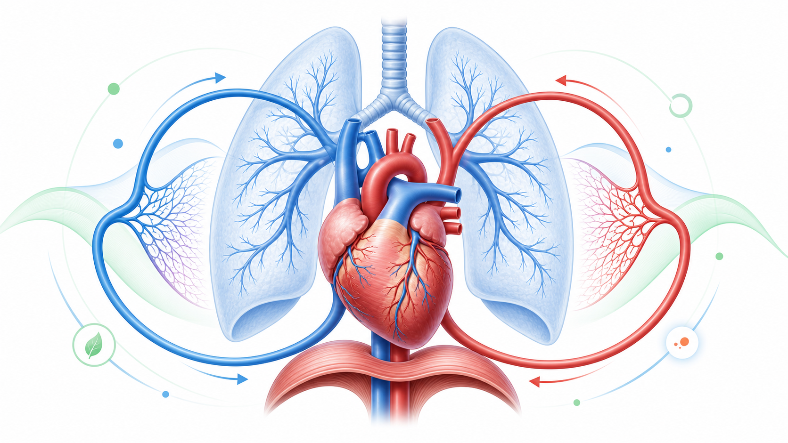

Day 32 · 心血管与呼吸系统解剖

今天核心是把心脏、血管、肺和呼吸肌连成一条运输链。右心把缺氧血送去肺，左心把含氧血送到全身；肺泡负责气体交换，毛细血管负责物质交换。
血管分工要清楚: 动脉厚壁高压负责承压输出，静脉薄壁低压并靠瓣膜辅助回流，毛细血管壁薄适合交换。呼吸道从鼻、咽、喉、气管、支气管、细支气管到肺泡，膈肌是主要吸气肌。
打开 Day32 原学习页 →
今天核心是把心脏、血管、肺和呼吸肌连成一条运输链。右心把缺氧血送去肺，左心把含氧血送到全身；肺泡负责气体交换，毛细血管负责物质交换。
血管分工要清楚: 动脉厚壁高压负责承压输出，静脉薄壁低压并靠瓣膜辅助回流，毛细血管壁薄适合交换。呼吸道从鼻、咽、喉、气管、支气管、细支气管到肺泡，膈肌是主要吸气肌。
打开 Day32 原学习页 →


今日新知识 Day32：体循环和肺循环路径各从哪里出发、回到哪里？
今日新知识 Day32：为什么“动脉一定含氧、静脉一定缺氧”是错的？
今日新知识 Day32：膈肌吸气时如何改变胸腔容积？
Day31：客户报告运动中胸痛或晕厥，训练流程如何改变？
Day29：特异性原则如何影响心肺训练设计？
Day25：一次 20 秒全力冲刺、90 秒高强间歇、30 分钟慢跑，主导供能各偏向什么？
Day18：硬拉中腹内压和中立脊柱分别负责什么？
串联题：新客户静息血压偏高，跑步时异常气短，还想做 HIIT。你用 Day31、Day32、Day25 怎么解释处理？
| 易错点 | 错因 | 修正句 |
|---|---|---|
| 动脉=含氧，静脉=缺氧 | 按含氧量记，忽略命名依据。 | 动脉离开心脏，静脉回到心脏；肺动脉缺氧，肺静脉含氧。 |
| 喘就是肺活量差 | 把氧运输链简化成肺容量。 | 喘可能来自通气、心输出量、血液携氧、肌肉摄氧和二氧化碳清除。 |
| 左心右心功能一样 | 忽略泵送目的地和压力差。 | 右心低压送肺，左心高压送全身，左心室壁更厚。 |
| 呼吸肌只管换气 | 割裂呼吸和核心稳定。 | 膈肌、腹肌群和胸廓控制既影响换气，也影响腹内压和躯干稳定。 |
| 高强度先练了再看反应 | 忘记 Day31 筛查优先级。 | 异常症状或体征先评估，不能用训练试探风险。 |